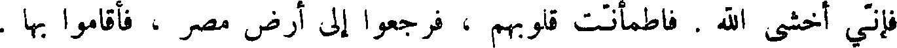
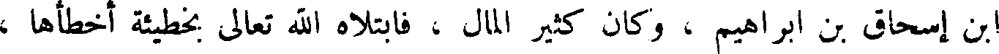
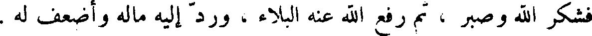
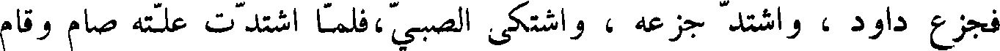
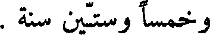

File: 000250.gt.txt (if the image is defective, simply delete all Arabic text and the line will be excluded)

عن شماله ، لأن منشى كان اكبر ، فقلب يده اليمنى على افرائيم ، واصى
File: 000251.gt.txt (if the image is defective, simply delete all Arabic text and the line will be excluded)

يوسف أن يحمله ويدفنه إلى جنب قبر إبراهيم وإسحاق .
File: 000252.gt.txt (if the image is defective, simply delete all Arabic text and the line will be excluded)

ولما توفي يعقوب قاموا يبكون عليه سبعين يوما ، ثم حمله يوسف ، واخرج
File: 000253.gt.txt (if the image is defective, simply delete all Arabic text and the line will be excluded)

معه غلمانا من أهل مصر ، وصار به إلى ارض فلسطين ، فدفنه إلى جنب قبر
File: 000254.gt.txt (if the image is defective, simply delete all Arabic text and the line will be excluded)

إبراهيم وإسحاق .
File: 000255.gt.txt (if the image is defective, simply delete all Arabic text and the line will be excluded)

ولما فرغوا من دفن يعقوب قال لاخوته : ارجعوا معي إلى ارض مصر !
File: 000256.gt.txt (if the image is defective, simply delete all Arabic text and the line will be excluded)
فخافوه ، فقالوا له : قد أوصاك أبوك يعقوب أن تغفر خطيئتنا . قال : لا تخشوني !
File: 000257.gt.txt (if the image is defective, simply delete all Arabic text and the line will be excluded)

فأني أخشى الله . فاطمأنت قلوبهم ، فرجعوا إلى أرض مصر ، فألقموا بها .
File: 000258.gt.txt (if the image is defective, simply delete all Arabic text and the line will be excluded)

وعاش يوسف بمصر دهرا ، ثم حضرته الوفاة ، فجمع بني إسرائيل ،
File: 000259.gt.txt (if the image is defective, simply delete all Arabic text and the line will be excluded)

وقال : أنكم تخرجون بعد حين من ارض مصر ، إذا بعث الله رجلا يقال له
File: 000260.gt.txt (if the image is defective, simply delete all Arabic text and the line will be excluded)

موسى بن عمران من ولد لاوي بن يعقوب ، وسيذكركم الله ، ويرفعكم ،
File: 000261.gt.txt (if the image is defective, simply delete all Arabic text and the line will be excluded)

فأخرجوا بدني من هذه الأرض ، حتى تدفنوني عند قبور آبائي .
File: 000262.gt.txt (if the image is defective, simply delete all Arabic text and the line will be excluded)

ومات يوسف وله مائة وعشر سنين ، فصير في تابوت حجارة ، وصير
File: 000263.gt.txt (if the image is defective, simply delete all Arabic text and the line will be excluded)

في النيل .
File: 000264.gt.txt (if the image is defective, simply delete all Arabic text and the line will be excluded)

وكان في ذلك العصر أيوب النبي ابن اموص بن زارح بن رعوئيل بن عيصو
File: 000265.gt.txt (if the image is defective, simply delete all Arabic text and the line will be excluded)

ابن إسحاق بن إبراهيم ، وكان كثير المال ، فابتلاه الله تعالى بخطيئة أخطأها ،
File: 000266.gt.txt (if the image is defective, simply delete all Arabic text and the line will be excluded)

فشكر الله وصبر ، ثم رفع الله عنه البلاء ، ورد إليه ماله وأضعف له .
File: 000267.gt.txt (if the image is defective, simply delete all Arabic text and the line will be excluded)

ففعلت هذا ، فلأنتقمن منك بشر ولدك ، ولأ سلطنه عليك وعلى نسائك !
File: 000268.gt.txt (if the image is defective, simply delete all Arabic text and the line will be excluded)

فعظم ذلك على داود ، فقال له ناتان : أن الله قد تجاوز عن سبيلك ، فلن تموت ،
File: 000269.gt.txt (if the image is defective, simply delete all Arabic text and the line will be excluded)

ولكنه ينتقم منك بشر بنيك ، وأعلمه الله أن ولده الذي ولدته المرأة يموت ،
File: 000270.gt.txt (if the image is defective, simply delete all Arabic text and the line will be excluded)

فجزع داود ، واشتد جزعه ، واشتكى الصبي ، فلما اشتدت علته صام وقام
File: 000271.gt.txt (if the image is defective, simply delete all Arabic text and the line will be excluded)

ليصلي ويبكي ، ويتمرغ بالشعر على الأرض ، فلما توفي الصبي اعظم خول
File: 000272.gt.txt (if the image is defective, simply delete all Arabic text and the line will be excluded)

داود أن يخبروه ، بذلك حتى سمع بوشوشتهم ، فعلم ، فغسل وجهه ، ولبس
File: 000273.gt.txt (if the image is defective, simply delete all Arabic text and the line will be excluded)

ثيابه ، وجلس في مجلسه، ودعا بطعامه، وقال : إنما كنت احزن قبل أن يهلك،
File: 000274.gt.txt (if the image is defective, simply delete all Arabic text and the line will be excluded)

فأما الساعة ، فأن خزني لا يرده إلي بل أنا اذهب إليه . ثم واقع برسبا ، فحملت
File: 000275.gt.txt (if the image is defective, simply delete all Arabic text and the line will be excluded)

غلاما ، فسماه سليمان .
File: 000276.gt.txt (if the image is defective, simply delete all Arabic text and the line will be excluded)

ثم إن ابيشالوم ببن داود قتل أخاه امنون ، وذلك انه اتهمه بأخت له من
File: 000277.gt.txt (if the image is defective, simply delete all Arabic text and the line will be excluded)

أمه ، فقتله ، وخرج على داود . وكان ابيشالوم عظيم الجسم ، كثير الشعر ،
File: 000278.gt.txt (if the image is defective, simply delete all Arabic text and the line will be excluded)

فبعث إليه داود من رده حتى رجع ، ثم خرج عليه ثانية ، فهرب منه داود
File: 000279.gt.txt (if the image is defective, simply delete all Arabic text and the line will be excluded)

ماشيا على رجليه ، حتى صعد عقبة طور سينا ، وبلغ منه الجوع حتى لحقه رجل
File: 000280.gt.txt (if the image is defective, simply delete all Arabic text and the line will be excluded)

معه خبز وزيت ، فأكل منه ؛ ودخل ابيشالوم مدينة أبيه ، وصار إلى داره
File: 000281.gt.txt (if the image is defective, simply delete all Arabic text and the line will be excluded)

واخذ سراري أبيه ، فوطئعمن ، وقال : ملكني الله على بني إسرائيل ؛ وخرج
File: 000282.gt.txt (if the image is defective, simply delete all Arabic text and the line will be excluded)

ومعه اثنا عشر ألفا ، فطلب داود ليقتله ، فهرب داود حتى جاز نهر الأردن ،
File: 000283.gt.txt (if the image is defective, simply delete all Arabic text and the line will be excluded)

فلما جاز اجتمع إليه جماعة من أصحابه ولفيف من القرى ، فوجه يؤاب ولده
File: 000284.gt.txt (if the image is defective, simply delete all Arabic text and the line will be excluded)

ليحارب ابيشالوم ، وقال له : خذه لي حيا صحيحا ! فخرجوا ، فحاربوه ،
File: 000285.gt.txt (if the image is defective, simply delete all Arabic text and the line will be excluded)

وكان أبيشالوم على بغل ، فدخل تحت شجرة بطم ، فتعلق بها ، فاندقت عنقه ،
File: 000286.gt.txt (if the image is defective, simply delete all Arabic text and the line will be excluded)

ورماه يؤاب بثلاثة اسهم ، وطرحه في جب ، فلما أتى داود الخبر جزع بعليه
File: 000287.gt.txt (if the image is defective, simply delete all Arabic text and the line will be excluded)

جزعا شديدا ، ورجع داود إلى موضعه .
File: 000288.gt.txt (if the image is defective, simply delete all Arabic text and the line will be excluded)

وخرج على داود بعد ذلك أزلا ، ومعه جبابرة ، فحاربهم ، فقتلهم ،
File: 000289.gt.txt (if the image is defective, simply delete all Arabic text and the line will be excluded)

فلما قتلهم ، وأنقذه الله منهم ، قام يقدس الله ويسبحه ، فقال في تقديسه :
File: 000290.gt.txt (if the image is defective, simply delete all Arabic text and the line will be excluded)

إياك يا رب اعبد ، ولك أخلص محبي ، فانك قوتي وعدتي ، وملجأي
File: 000291.gt.txt (if the image is defective, simply delete all Arabic text and the line will be excluded)

أرفخشد بن سام
File: 000292.gt.txt (if the image is defective, simply delete all Arabic text and the line will be excluded)

ثم قام ارفخشد بن سام بعبادة الله تعالى وطاعته ، وكان قد ولد له شالح بعد
File: 000293.gt.txt (if the image is defective, simply delete all Arabic text and the line will be excluded)

أن أتت عليه مائة وخمس وثمانون سنة ، وقد تفرق ولد نوح في البلاد ، وكثرت
File: 000294.gt.txt (if the image is defective, simply delete all Arabic text and the line will be excluded)

الجبابرة والعتاة منهم ، وافسد ولد كنعان بن حام ، واظهروا المعاصي.
File: 000295.gt.txt (if the image is defective, simply delete all Arabic text and the line will be excluded)

ولما حضرت ارفخشد الوفاة جمع إليه ولده وأهله وأوصاهم بعبادة الله تعالى
File: 000296.gt.txt (if the image is defective, simply delete all Arabic text and the line will be excluded)

ومجانبة المعاصي ، وقال لشالح ابنه : اقبل وصيتي ، وقم في اهلك بعدي عاملا
File: 000297.gt.txt (if the image is defective, simply delete all Arabic text and the line will be excluded)

بطاعة الله تعالى . ومات يوم الأحد لسبع بقين من نيسان ، وكانت حياته أربعمائة
File: 000298.gt.txt (if the image is defective, simply delete all Arabic text and the line will be excluded)

شالح بن ارفخشد
File: 000299.gt.txt (if the image is defective, simply delete all Arabic text and the line will be excluded)

وخمسا وستين سنة .